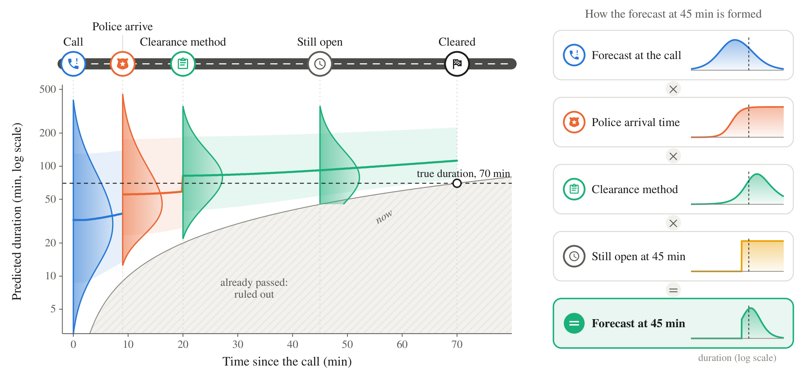
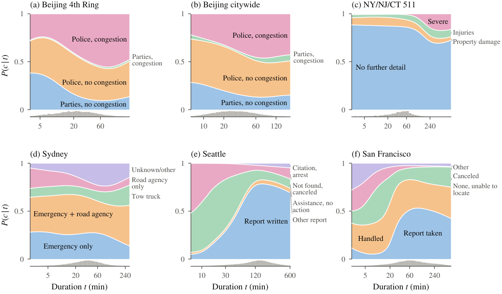
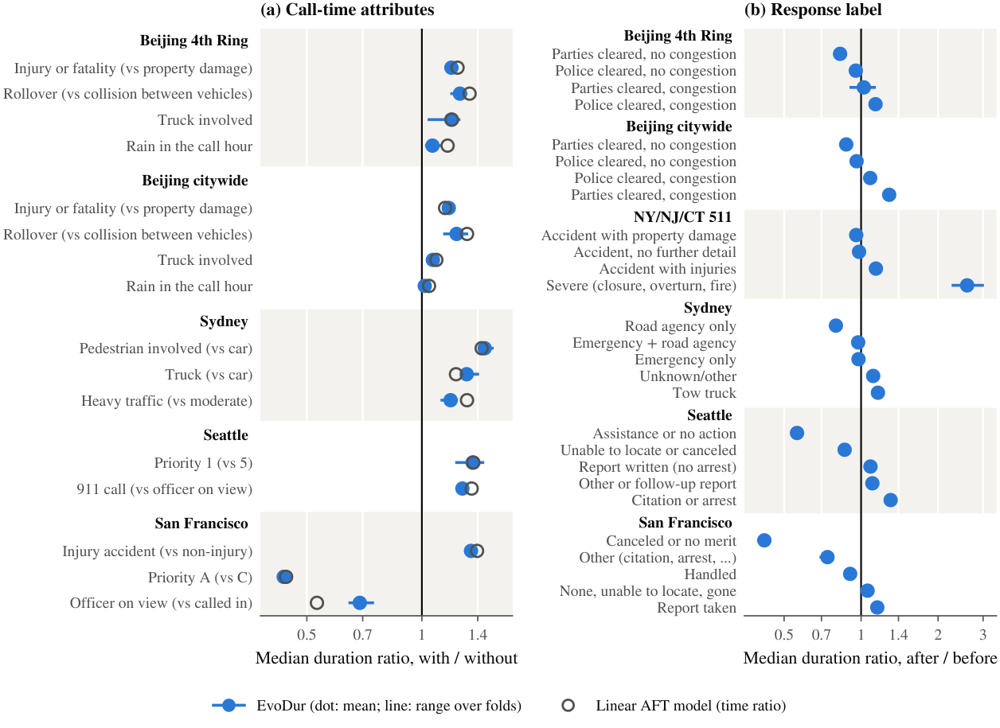

EvoDur: One model for every stage of the response
Bayesian updating of traffic incident duration forecasts

Why EvoDur
A call-time forecast and one module each for the police arrival time, the label and the elapsed time. Any combination of information is handled without refitting, and an update takes 1–3 ms on one CPU core.
After police arrival, EvoDur scores higher than models refitted for that stage in every fold on all four datasets with arrival times. The longer an incident stays open, the larger the gain, because a refitted model sees fewer incidents.
With the arrival time and the label, the 80% interval has a 5–14% lower interval score than stage-wise linear and gradient-boosted models, and it still covers 79–80% of incidents.
Abstract
Traffic management centers decide on diversions, message signs, tow trucks and police units while an incident is still open, so they need a duration forecast that is revised as information arrives. Most existing models are refitted for each stage of the response, and the models for late stages learn from the few incidents that reach them. We propose EvoDur, one model for every stage. A neural network forecasts the distribution of the duration at the call. The police arrival time, the response label that records how the incident is handled, and the time the incident has stayed open each enter through their own likelihood given the duration, and Bayes' rule combines whatever is known. On six datasets from three countries, EvoDur is as accurate as the best of ten baselines at the call. After police arrival it is more accurate than models refitted for that stage and than a single network with the later information as optional inputs, and the longer an incident stays open, the more it gains over models refitted on the incidents still open. With the arrival time and the label, its 80% prediction intervals have a 5–14% lower interval score than those of stage-wise linear and gradient-boosted models and keep their nominal coverage. Relative to the call, the arrival time and the label reduce the error of the predicted median by 11–37% on the four datasets that record arrivals, and the forecast of the incident class (minor, intermediate or major) improves at each stage.
Method
Let \(\boldsymbol{x}\) be what is known at the call (time, location, incident type and, where recorded, priority or vehicles), \(T\) the duration and \(C\) the label recorded during the response. Classical competing-risk models put the label first,
so the forecast at the call is a mixture over labels that are not yet known. EvoDur puts the duration first,
The label then becomes evidence about the duration, and every later piece of evidence \(e_j\) with a likelihood given the duration enters the same way:
The call-time forecast \(f(t \mid \boldsymbol{x})\) is a neural mixture of log-logistic distributions. The modules are a classifier of the label given the duration, a model of the police arrival time \(r\) as a fraction of the duration (so \(r < t\) holds by construction), and the indicator \(\mathbb{1}\{t > s\}\) for an incident still open at time \(s\). Labels that indicate a larger response become more likely as the duration grows, so the label carries information about the duration:

Results
At the call, and after police arrival. At the call EvoDur is as accurate as the best other model. After police arrival it is ahead of every model refitted for that stage.

The gain over refitting grows the longer an incident stays open. A model refitted for a late stage learns only from the incidents that are still open, and these become few. EvoDur keeps the call-time forecast learned from all incidents.
Log score of EvoDur minus that of a neural network refitted on the incidents still open, with the label known (×10−3 per incident; positive means EvoDur is better), and the number of folds won out of five. A dash marks fewer than 100 test incidents per fold.
| State | Beijing 4th Ring | Beijing citywide | NY/NJ/CT 511 | Sydney | Seattle | San Francisco |
|---|---|---|---|---|---|---|
| Label known | −11 (0/5) | −3 (1/5) | 0 (3/5) | −5 (0/5) | −2 (2/5) | +6 (5/5) |
| Open 10 min | +1 (2/5) | −2 (1/5) | +1 (3/5) | −2 (2/5) | −3 (2/5) | +4 (5/5) |
| Open 30 min | 0 (2/5) | +4 (4/5) | +5 (5/5) | +5 (4/5) | 0 (3/5) | +4 (5/5) |
| Open 60 min | +16 (3/5) | +18 (5/5) | +28 (5/5) | +4 (3/5) | +10 (5/5) | +7 (5/5) |
| Open 90 min | – | +25 (3/5) | +36 (5/5) | +5 (3/5) | +16 (5/5) | +8 (5/5) |
| Open 120 min | – | 0 (4/5) | +88 (5/5) | −4 (2/5) | +20 (5/5) | +9 (5/5) |
What moves the forecast. Because each piece of information has its own module, its effect can be read off. A severe NY/NJ/CT event multiplies the median duration by 2.6; in Seattle, an officer reporting that only assistance was given cuts the chance of an incident longer than 2 h from 50% to 26%.

Value for decisions. For a decision that pays off only for major incidents (over 2 h), such as signing a long diversion, acting on EvoDur's probability of a major incident saves more at each stage of the response.

Data
Four datasets are public: the 511NY event feed (NY/NJ/CT, 2010–2015), the Sydney road traffic incident data (Mendeley Data), and the police dispatch records of Seattle and San Francisco. The code downloads them, checks them against the snapshot used in the paper, and regenerates every table and figure. The Beijing data (2008) are available from the corresponding author on reasonable request; they are not public because of privacy restrictions of the Beijing Municipal Traffic Management Bureau.
Citation
@article{cao2026evodur,
title = {One model for every stage of the response: Bayesian updating of
traffic incident duration forecasts},
author = {Cao, Xiaoyang and Liu, Zhiyong and Li, Ruimin},
journal = {Preprint},
year = {2026}
}